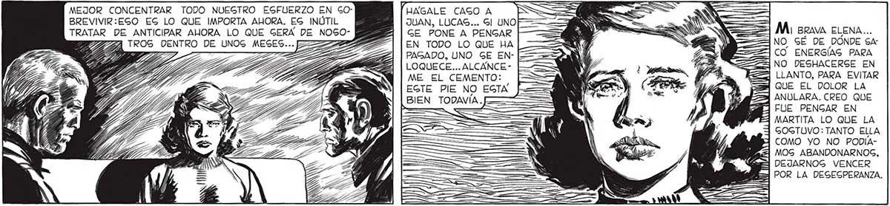
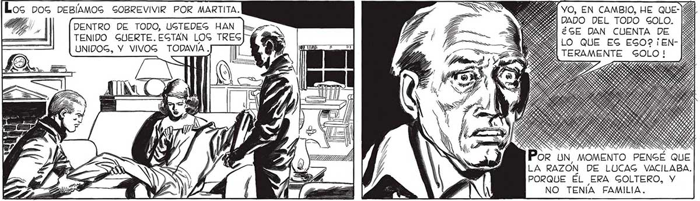
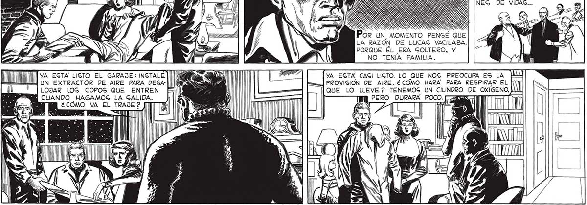

SÁ == BREVIVIR:ESO EG LO QUE IMPORTA AHORA. ES INÚTIL | | JUAN, LUCAS... Gl UNO 2 TRATAR DE ANTICIPAR AHORA LO QUE GERA DE NOGO- AB | GE PONE A PENGAR $ AO O , ROS DENTRO DE UNOG MESES ABRA | | EN TODO LO QUE HA QU =FE y A, ES ME 2O0US Ele TZ TZ TIAS, PAGADO, UNO GE EnN- [=== a CO ENERGIAS: PARA SF IO E E 2 | LOQUECE... ALCANCE- ' PAT 5 NO DESHACERGE EN AA 5 LLANTO, PARA EVITAR QUE EL DOLOR LA ANULARA. CREO QUE FUE PENGAR EN MARTITA LO QUE LA GOGTUVO: TANTO ELLA COMO YO NO PODIA| MOG ABANDONARNOG, E] DEJARNOG VENCER POR LA DESESPERANZA. “Ss RIO OQ MA BRAVA ELENA... 32 MEJOR CONCENTRAR TODO NUEGTRO ESFUERZO EN GO- UNGALE CAGO A ==> ==y, AS IEA DS 2 Ya ME EL CEMENTO: EGTE PIE NO EGTA BIEN TODAVÍA. AN SiemPRE HABÍA VIVIDO GOLO. CLARO QUE, PENGÉ ENGEGUIDA, UN HOMBRE NUNCA EGTA DEL TODO GOLO; GIEMPRE TIENE AMIGOG, RELACIONES, COMPAÑEROS DE TRABAJO. SIEMPRE, HASTA QUE EMPIEZA A CAER UNA NEVADA COMO AQUELLA Y GIEGA EN MINUTOS MILLONES Y MILLO: NES DE VIDAS... Los Dos DEB/AMOS SOBREVIVIR POR MARTITA. , SS). YO, EN CAMBIO, HE QUEal, DENTRO DE TODO, UGTEDEG HAN k eE Si o ] TENIDO GUERTE.EGTAN LOGS TRES / LO QUE ES EGO? ¡EN- [E UNIDOG, Y VIVOG TODAVIA . ERAMENTE E0to! ess: IS a > OR UN, LA RAZON DE LUCAG VACILABA. PORQUE EL ERA GOLTERO, Y NO TENÍA FAMILIA. YA ESTA LIGTO EL GARAJE: INGTALE e UN sand YA EGTA CAGI LIGTO. LO QUE NOG PREOCUPA EG LA UN EXTRACTOR DE AIRE PARA DEGA- | NS em. ] PROVIGION DE AIRE. ¿COMO HARA PARA REGPIRAR EL LOJAR LOG COPOS QUE ENTREN - L _— QUE LO LLEVE? TENEMOS UN CILINDRO DE OXIGENO, ji CUANDO HAGAMOG LA GALIDA. S ,l . | IM PERO DURARA POCO. ¿ COMO VA EL ZA A S r a 50 EW US


